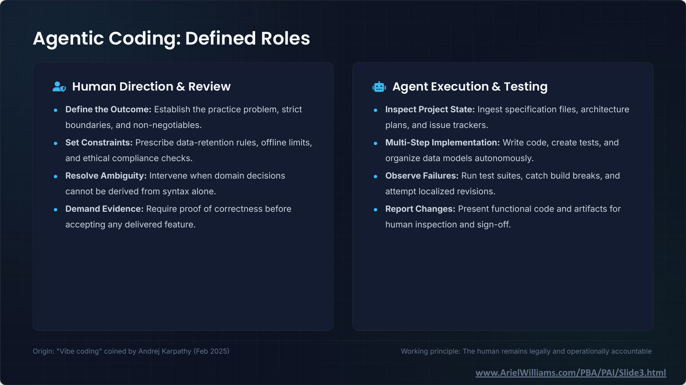

It Works: Agentic Coding and Legal Technology · Slide 3 of 12
Agentic Coding: Defined Roles
Slide snapshot captured · Ariel Williams


Text transcript
Human Direction & Review
- Define the Outcome: Establish the practice problem, strict boundaries, and non-negotiables.
- Set Constraints: Prescribe data-retention rules, offline limits, and ethical compliance checks.
- Resolve Ambiguity: Intervene when domain decisions cannot be derived from syntax alone.
- Demand Evidence: Require proof of correctness before accepting any delivered feature.
Agent Execution & Testing
- Inspect Project State: Ingest specification files, architecture plans, and issue trackers.
- Multi-Step Implementation: Write code, create tests, and organize data models autonomously.
- Observe Failures: Run test suites, catch build breaks, and attempt localized revisions.
- Report Changes: Present functional code and artifacts for human inspection and sign-off.
Origin: "Vibe coding" coined by Andrej Karpathy (Feb 2025)
Working principle: The human remains legally and operationally accountable
Slide footer: www.ArielWilliams.com/PBA/PAI/Slide3.html